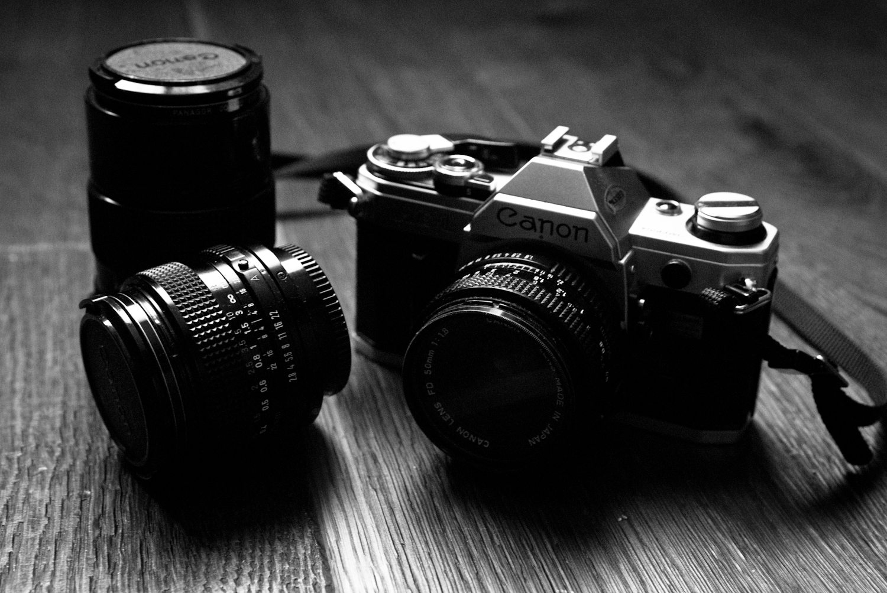

La fotografía es el arte y la técnica de obtener imágenes duraderas debidas a la acción de la luz.2 Es el proceso de proyectar imágenes y capturarlas, bien por medio del fijado en un medio sensible a la luz o por la conversión en señales electrónicas. Basándose en el principio de la cámara oscura, se proyecta una imagen captada por un pequeño agujero sobre una superficie, de tal forma que el tamaño de la imagen queda reducido. Para capturar y guardar esta imagen, las cámaras fotográficas utilizan película sensible para la fotografía analógica, mientras que en la fotografía digital, se emplean sensores CCD, CMOS y memorias digitales.
|  | |
 |
 |